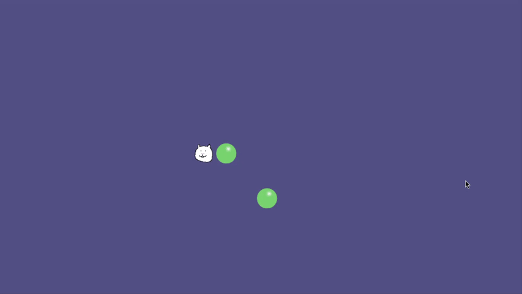
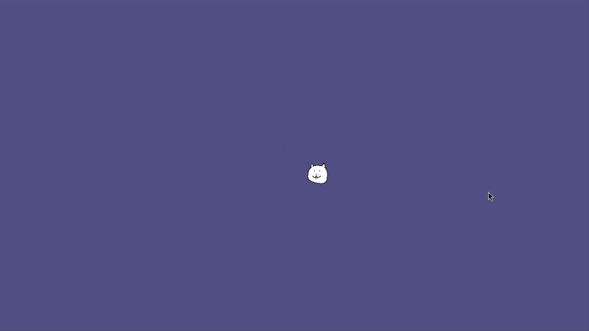

"KA24DE" C++ Game Framework
MADE WITH
MADE WITH
KA24DE is an ecs based game framework I've developed solely using C++ and SDL3. With the purpose of learning how ecs and game-engines work under the hood. The framework currently features input handling, an abstracted user scripting layer, AABB collision detection and 2D sprite rendering. With plans for OpenGL support and a basic rigidbody physics system coming eventually.

